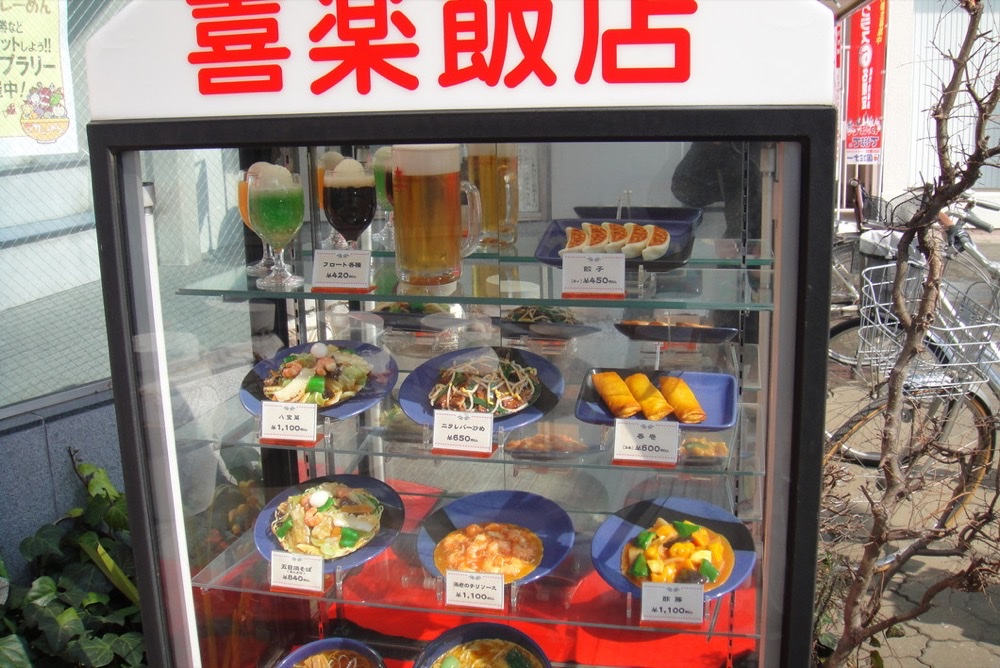

SINCE 1969
昭和四十四年から、
この場所で
開業は昭和四十四年（一九六九年）六月。古河駅の東口を出てすぐ、 駅東の専門店会に名を連ねたまま、いまも同じ場所で店を開けています。
年中無休、十一時から夜十一時まで通しで営業しております。 昼どきを外れた時間でも、そのままお入りいただけます。 入口前のショーケースは、その頃から変わらないままです。
「ほとんどの飲食店が休憩中で営業していない中、駅前のこちらが営業していて助かりました」
お客様の声より